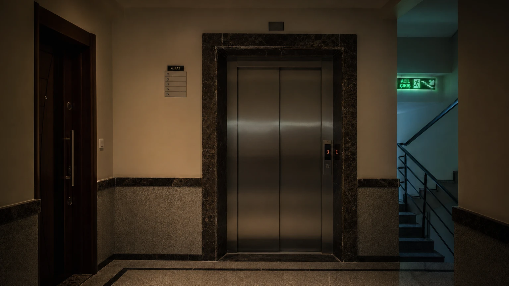

Deprem Anında Asansörde Ne Yapmalı? Her Katta Güvenlik
"Asansöre binme, merdiven kullan" söylemi doğru ama yeterli değil. Peki deprem sırasında asansördeyseniz? Binayı terk etmek için kaç. kat merdivenle inmelisiniz? Bu soruların cevapları burada.
Asansöre Neden Binilmemeli?
Deprem sırasında ve hemen sonrasında asansör kullanmak tehlikelidir çünkü: 1. Elektrik kesilirse kabin iki kat arasında kalır. 2. Yapı sarsıntısından raylar bükülür, kapılar açılmaz. 3. Artçılar sizi içeride mahsur bırakabilir. 4. Yangın durumunda asansör bacası etkisi yaratır. Kurala tek istisna: Yüksek katlı ve hareket kısıtlı kişiler — onlar için özel tahliye planı yapılmalıdır.
Deprem Anında Asansördeyseniz
Paniklemyin. Kabine düzgün tutunun. Tüm katlara basın — hangi katta duruyorsa çıkın. Kapı açılmıyorsa kabindeki acil hattı arayın. Hiçbir şekilde kabinin üstüne çıkıp kablo ile tırmanmayı denemeyin (elektrik riski). Uzman yardımı gelene kadar bekleyin. Günlük asansörde genellikle acil çağrı butonu (☎) ve kendi başına açılan kapı mandalı vardır.
Deprem Modu Olan Asansörler
Modern binalarda Deprem Dedektörlü (Sismik Sensörlü) Asansör sistemi bulunur. Sarsıntı algılandığında: kabin en yakın kata gider, kapılar açılır, herkes iner ve asansör hizmet dışı olur. Bu sistem Japonya ve bazı Avrupa ülkelerinde zorunlu. Türkiye'de yeni yönetmelikle büyük binalarda yaygınlaşıyor. Binanızın asansörünün bu özelliği olup olmadığını yöneticiden öğrenin.
Deprem Sonrası Kaç Kat Merdivenden İnmeli?
Bina yüksekliğine göre karar verin: 1-5. kat: merdivenden direkt inin. 6-15. kat: 3-4 katta bir dinlenerek inin. 15+ kat: önce yangın merdiveni bölümüne geçin, yavaş inin (panik halinde düşme riski yüksek). Merdivende tırmıklar, elektrik panelleri ve cam alanlara dokunmayın. Merdiven boşluğunun üst katına bakarak hasar var mı kontrol edin.
Her Kattaki Güvenli Bölgeler
Deprem anında bulunduğunuz katta: Mutfak ve banyo gibi ıslak hacimlerde çok durmayın (su tesisatı patlar). Bodrum kata inmeyin (su veya gaz kaçağı birikebilir). Giriş katı ve 1. kat merdiven sahanlığı genelde en sağlam alanlar. Sarsıntı 30 saniyeden uzunsa zemini hissedene kadar bekleyin.